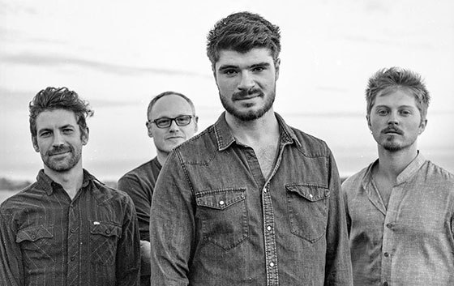

Just when you think American roots music should be relegated to the dusty confines of a purist’s museum it will surprise you with a paradigm shift. Take Marty O’Reilly & the Old Soul Orchestra— passing through tradition, the quartet stumbled upon innovation, proving that old souls can be creatively fresh.
The Santa Cruz, California-based quartet’s latest, Stereoscope, out February 9, 2018, marks an evolutionary leap in a journey of artistic identity, songwriting maturity, band friendship and fiery group synergy. Here, Marty O’Reilly & the Old Soul Orchestra homed in on their signature cosmic roots aesthetic, brimming with cinematic songcraft, impressionistic lyrics, clever arrangements, telepathic ensemble interplay, and soulfully world-weary vocals. Imagine the delta blues reprised by psychedelic indie rockers.

Marty O’Reilly & the Old Soul Orchestra features Marty on electrified resonator guitar and vocals, Chris Lynch on violin and keys, Ben Berry on upright bass, and Matt Goff on drums and percussion. The group specializes in roots music with evocative lyrics that are conceptually cryptic, relying on imagery and symbols to convey emotion. Artistic touchstones for the group include John Lee Hooker, Howlin’ Wolf, the darkly cathartic oeuvre of Tom Waits, and the experimental arrangements of Radiohead.
The album represents the maturation of artists shedding hero worship and embracing the creativity within. These new frontiers are characterized by a heartfelt purity in Marty’s vocals, the tracks’ unique and richly expressive chord structures and progressions, a shift in narrative perspectives to a more observational bend, and emotionally dynamic arrangements that are beautifully arresting, often beginning with sparse simplicity and then reaching lush and fully orchestrated climaxes with sensitive group interplay.
The 11-song album opens with “Firmament,” which eases in with delicately eerie ambience and sparse musical accompaniment, revealing all the soulful nuances and inflections in Marty’s voice. The song soars forward with an impactful arrangement as the full band joins in with rich and varied musicality, including a dazzling drum and percussive break and a violin solo as brilliantly fractured as a cubist painting. The album’s third track, the haunting “Ghost,” is a swampy ambient blues that uses the phenomena of sleep paralysis as an intriguing metaphor for vulnerability. The standout album single “Off and On Again” offers sweet yearning for a détente after a lover’s quarrel. Other album highlights include a rendition of Skip James’ blues classic “Hard Time Killing Floor” with chillingly beautiful new music to accompany the haunting traditional lyrics, and the three stirring, but challenging, instrumentally-driven songs that conclude the album and recall fringe jazz guitarist’s Bill Frisell’s evocations of dustbowl Americana with futuristic ambience.